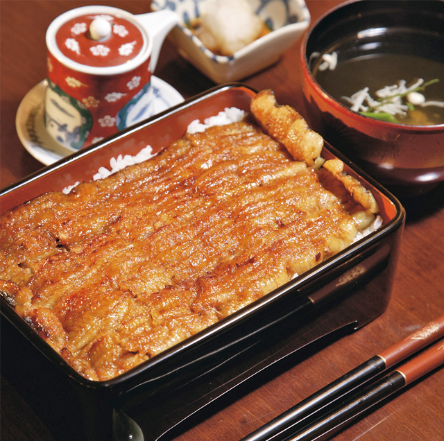

Sie sind Tradition in Japan: Restaurants, die nur ein Produkt zubereiten, das aber mit raffinierter Kunstfertigkeit. Im Nodaiwa ist es Aal. Besitzer Kanejiro Kanemoto betreibt in Tokio drei solcher Speisestätten, dazu das Nodaiwa in Paris. Wie der Fisch, eine Gesundheitsquelle ersten Ranges, gekocht wird, hat Iwajiro Noda entwickelt. Das war fünf Familiengenerationen früher, gegen Ende der Edo-Epoche. Keine Generation hat am Originalrezept etwas verändert, bis heute. Küchenchef Takeyuki Shirakura aus Tokio und seine Mitarbeiter (alle in Japan trainiert) filetieren den Aal (200 bis 400 Gramm schwer) lebendfrisch. Dann setzen sie die Filets an Spießen einer Oberhitze aus, bis nur das gute Fett und alle heilsamen Vitamine im Fleisch bleiben. Nächster Schritt: Die Filets garen im Dampf. Schließlich werden die Fischspieße abwechselnd, drei- bis viermal, in eine Marinade aus Sojasauce und süßem Sake getaucht und über glühender Kohle gegrillt. Nach diesen Schritten zergeht das Fleisch auf der Zunge, ein unvergleichlicher Genuss. Klassischerweise serviert Maître Eric Ryckelynck (Bild mit Küchenchef) die von den Spießen gelösten Filets auf einer Reisschicht in schwarzer Lackbox. Drumherum: eingelegtes Gemüse und Fischconsommé, in der Aalleber schwimmt. Lecker dazu: japanisches Bier, Sake, französische Weine.

{kind=link}
{kind=link}